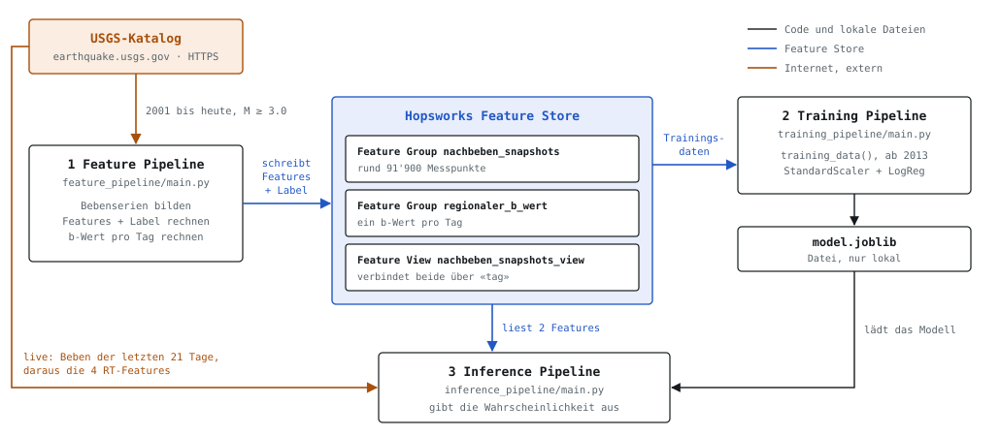

Projektarbeit MLOps · CAS AI Operations · FHNW · November 2026
Kommt nach einem Hauptbeben (Stärke M 5.0 oder mehr) innerhalb der nächsten 6 Stunden ein Beben ab M 4.5? Das System antwortet mit einer Wahrscheinlichkeit. Diese Seite zeigt Version 1: drei Pipelines, ein Feature Store, ein einfaches Modell. Der Text dazu steht im README.md. Hier stehen die Begründungen und Details. Stand: 09.11.2026.
Die Pipelines reden nie direkt miteinander. Sie tauschen alles über den Feature Store (Hopsworks) und über die Modelldatei aus.

Die Feature Pipeline läuft von Hand und schreibt den Store neu. Die Inferenz liest davon nur zwei Zahlen. Die anderen vier berechnet sie jedes Mal frisch aus den USGS-Daten.
| Pipeline | Datei | Wichtigste Funktionen |
|---|---|---|
| 1 Feature | feature_pipeline/main.py | fetch_usgs_events holt die Beben (common/usgs.py) · decluster_sequences bildet die Serien (common/decluster.py) · build_snapshots setzt die Messpunkte · compute_aggregated_feature, compute_rt_features, compute_label, compute_regionaler_b_wert rechnen (common/features.py) · write_feature_group, write_b_wert_feature_group, create_joined_feature_view schreiben in den Store (common/hopsworks_io.py) |
| 2 Training | training_pipeline/main.py | read_training_data_df erstellt den Trainingsdatensatz aus der Feature View mit training_data() · exclude_demo_reserve · select_training_period · split_sequences · danach StandardScaler + LogisticRegression, joblib.dump |
| 3 Inference | inference_pipeline/main.py | get_live_target_sequence oder get_replay_target_sequence · read_aggregated_features_from_store liest die Feature View · compute_rt_features · build_feature_vector · joblib.load, predict_proba |
Ein einzelnes Beben sagt wenig. Ein Hauptbeben mit seinen Nachbeben folgt einem Muster, das mit der Zeit abklingt. Darum werden die Beben zu Bebenserien gruppiert, und jede Serie wird alle 6 Stunden gemessen.
Vereinfachte Darstellung, keine echten Daten. Die Serienregel: Ein Beben gehört zur Serie, wenn es höchstens 100 km vom letzten Beben der Serie entfernt ist und höchstens 14 Tage danach kommt. Nur ein Beben ab M 5.0 startet eine neue Serie. Das Messfenster ist davon unabhängig und immer 14 Tage lang.
Gemessen am 16.10.2026. Median 2.5 Tage, 90 % der Serien kürzer als 32.6 Tage, längste 477 Tage (Tohoku 2011). Bei einem Viertel der Serien werden nur die ersten 14 Tage gemessen.
Ist ein späteres Beben der Serie mindestens so stark wie das bisherige Hauptbeben, wird es rückwirkend das Hauptbeben. Die Serie heisst dann nach ihm, und alle ihre Zeilen bekommen die neue ID.
Echtes Beispiel: Kumamoto 2016 begann mit einem M 6.2 am 14.04. Am 15.04. kam das M 7.0. Im Training kennt die Serie ihr stärkstes Beben schon, live kennt man nur die Vergangenheit.
kumulative_energie: Mass für die Grösse der Serie. Energie in Joule ≈ 10^(1.5·M + 4.8) nach Gutenberg & Richter (1956). Ein M 6 zählt so viel wie rund 1000 Beben M 4.b_wert: Verhältnis kleiner zu grosser Beben nach dem Gutenberg-Richter-Gesetz (Gutenberg & Richter, 1944), geschätzt mit dem Verfahren von Aki (1965).zeit_seit_letztem_beben_h: Die Nachbebenrate sinkt mit der Zeit nach dem Hauptbeben (Omori-Utsu-Gesetz; Utsu, Ogata & Matsu'ura, 1995).letzte_magnitude: Die Stärke des Hauptbebens ist zentrale Grösse im Nachbebenmodell von Reasenberg & Jones (1989). Hier wird die Stärke des letzten Bebens verwendet, das ist eine eigene Vereinfachung.letzte_tiefe_km: Die Zahl der Nachbeben hängt stark von der Tiefe ab (Persh & Houston, 2004).anzahl_frueh_nachbeben: Die beobachtete Aktivität einer Serie verbessert die Prognose; die USGS passt ihre Vorhersage an die bereits beobachteten Nachbeben an (Reasenberg & Jones, 1989; USGS Aftershock Forecast).training_pipeline/output/model.joblibVon 100 Messpunkten sind etwa 2 «Ja». Das Modell gibt darum fast immer weniger als 50 % aus und sagt bei der Schwelle 50 % nie «Ja». Es ordnet die Messpunkte trotzdem sinnvoll nach Gefahr.
Vereinfachte Darstellung: 100 Messpunkte, davon 2 mit «Ja» (im Training sind es 1.9 %). ROC-AUC 0.747: In etwa 75 von 100 Paaren (ein Messpunkt mit, einer ohne Folgebeben) bekommt der mit Folgebeben die höhere Wahrscheinlichkeit. F1 ist 0.00, genau wie bei der Baseline «immer Nein».
scikit-learn). Sie rechnet aus den 6 Features eine Wahrscheinlichkeit zwischen 0 und 1.Für die Vorführung gibt es den Replay-Modus. Er rechnet fast wie die Live-Vorhersage, aber für ein Beben aus der Vergangenheit. Zwei Unterschiede: Die Energie wird live für den gewählten Zeitpunkt nachgerechnet (ein gespeicherter Rasterpunkt wäre oft veraltet), und der b-Wert kommt aus dem Store. Das Modell bekommt nur die Daten bis zum gewählten Zeitpunkt. Was danach wirklich geschah, wird erst zum Vergleich gezeigt. Die drei Demo-Beben liegen im Feature Store, kommen aber nie ins Training.
| Demo-Beben | Stärke | Vorhersage (Stunde 0 bis 6) | Tatsächlich |
|---|---|---|---|
| Kumamoto 2016 | M 7.0 | 14.21 % | Ja, M 5.1 nach 0.1 h |
| Fukushima/Namie 2016 | M 6.9 | 12.74 % | Ja, M 5.0 nach 0.1 h |
| Hokkaido-Iburi 2018 | M 6.6 | 9.00 % | Ja, M 5.3 nach 0.2 h |
Lauf vom 09.11.2026 (live am selben Tag: 2.88 %). Das Modell unterschätzt alle drei. Befehl: python inference_pipeline/main.py --mode replay --mainshock-id us20005iis --6h-fenster-start-nach-hauptbeben 0
| Begriff | Bedeutung |
|---|---|
| Hauptbeben | Das stärkste Beben einer Bebenserie, mindestens M 5.0 |
| Bebenserie | Hauptbeben und alle Beben, die ihm zugeordnet werden |
| Messpunkt | Ein Zeitpunkt innerhalb einer Bebenserie. Jeder Messpunkt ist eine Tabellenzeile. |
| Feature | Eine Eingabezahl für das Modell, berechnet aus den Beben bis zum Messpunkt |
| Label | Die richtige Antwort fürs Training: 1 = es folgte ein M 4.5+ in den nächsten 6 h, sonst 0 |
| Pipeline | Ein Programm in festen Schritten (Daten holen, rechnen, speichern) |
| Feature Store | Eine Datenbank für Features, aus der Training und Vorhersage dieselben Werte lesen |